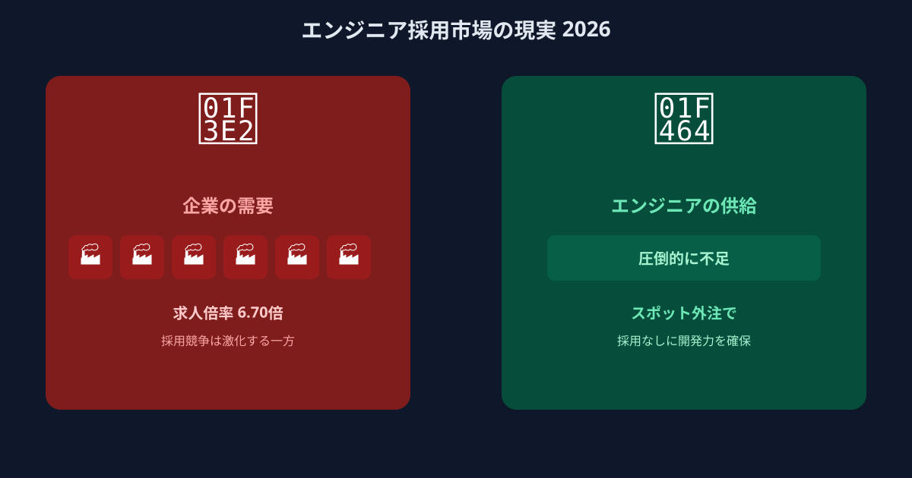
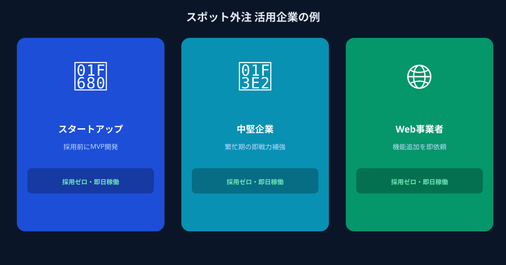

採用も大手外注も限界——エンジニア不足で開発が止まっていませんか？
「新機能を追加したいのに、担当エンジニアがいない」「LP改修くらい社内でやりたいのに、誰も手が空かない」「採用しようとしたけど、費用と時間がかかりすぎて断念した」——こういった悩みを抱えるWebディレクターや中小企業の経営者は、2026年になっても増え続けています。
問題の根っこにあるのは、「エンジニアを確保する手段が採用か大手外注しかない」という思い込みです。しかしどちらの方法も、今の市場環境では多くの企業にとって現実的ではなくなってきています。採用競争は激化し、大手外注は高額で敷居が高い。そのしわ寄せが「開発が止まる」「リリースが遅れる」「気づけば競合に置いてかれる」という事態につながっています。
では、出口はあるのでしょうか。あります。ただし、その出口は多くの方がまだ気づいていない場所にあります。
エンジニア採用はなぜこんなに難しいのか。2026年の市場リアル

2026年現在のエンジニア採用市場を、まず数字で確認してみましょう。フリーランスエンジニアの平均月単価は約80万円に達しており、生成AIを実践的に活用できるエンジニアではそれより10万円以上高い水準になっています（ファインディ株式会社調べ、2026年）。これは採用コストにも直結します。中途エンジニア採用にかかる費用は、エージェント手数料・媒体費・選考に費やす担当者の工数を合計すると、軽く100〜200万円を超えるケースが珍しくありません。
さらに厄介なのは、費用をかけたとしても「採れる保証がない」という点です。大手テック企業やメガベンチャーとの採用競争は激化しており、中小企業や予算の限られたスタートアップが条件面で勝つのはますます難しくなっています。採用活動を3〜6ヶ月続けても採用できず、費用だけが積み重なるという経験をした担当者も少なくないはずです。
「ならば外注で」と考えた場合、大手SIerや受託開発会社には別の壁が立ちはだかります。最低発注額の高さ、契約期間の縛り、要件定義から始まる長いプロセス——小さく素早く動きたい企業のニーズと、なかなか噛み合いません。
- 【採用】 採用費100〜200万円超・採用まで数か月・採れる保証なし・採用後の定着問題もある
- 【大手外注】 最低発注額が高い・契約期間の縛り・要件定義〜契約まで時間がかかる・小規模案件は断られることも
こうした構造的な問題を抱えた採用市場のなかで、「採用でも大手外注でもない方法」に注目が集まるのは自然な流れです。
採用しなくても開発力は買える。「スポット外注」という第三の選択肢

採用や大手外注に疲弊している企業が今、実際に使い始めているのが「スポット外注（マイクロ・マッチング）」と呼ばれる手法です。端的に言えば、「週1回だけ」「このAPIの実装だけ」「管理画面のバグ修正だけ」といったタスク単位で、フリーランス・副業エンジニアに依頼できる仕組みのことです。
月額固定費なし、最低稼働時間の縛りなし、長期契約の必要もない。必要なときに、必要な分だけ開発力を調達できる——これが、今の市場環境において最も柔軟で低リスクな選択肢として支持される理由です。
メリット① 採用費ゼロ。面接なし。今日から動けるエンジニアと即連携できる
採用活動との最大の違いは、「人材を探す工程」にかかるコストと時間がほぼゼロという点です。マッチングプラットフォームを通じて要件を伝えると、今すぐ動けるエンジニアと繋がれます。面接の日程調整も、条件交渉も、入社手続きも不要です。
「採用候補者が見つかるまでの数ヶ月間、開発を止める」という選択をせずに済むため、ビジネス上のタイムラインを守りながら開発を前進させられます。「週末から着手してほしい」「来週中にリリースしたい」といった短期的な要望にも対応できる柔軟さが、スポット外注の最大の魅力のひとつです。
メリット② 「このタスクだけ」からOK。月額固定費なし・スポット単位の低コスト
大手外注で問題になる「最低発注額」「月額固定費」「契約期間の縛り」が、スポット外注には存在しません。「まず1タスクだけ試してみる」という低リスクなファーストステップが踏めるため、初めて使う企業でも安心です。
数万円単位の単発依頼から始められるため、採用コストや大手外注費と比較したときのコスト優位性は明らかです。「やってみて手応えがあれば継続、なければそこで止める」という段階的な活用が、予算管理の観点からも非常に合理的です。小さく始めて、成果が出たら深める——この原則を実践しやすい構造になっています。
メリット③ メガベンチャー出身のフルスタック人材が週末・単発で動いてくれる
「安い外注＝品質が低い」というイメージを持たれる方も多いのですが、スポット外注の人材像はそれとはまったく異なります。ANKENに登録しているのは、メガベンチャーや大手IT企業に所属したまま「週末だけ」「平日夜だけ」副業として活動している現役フルスタックエンジニアや、最新のAI技術を実践レベルで扱えるエンジニアです。
彼らが副業として動いているという構造が、「ハイスペックな人材を低コストで活用できる」という逆説を生んでいます。本業で培った高い技術力を、週末のスポット案件で発揮してもらえる——これが、スポット外注ならではの価値です。採用してもなかなか出会えないレベルのエンジニアと、タスク単位で仕事できる環境が、今ここにあります。
こんな企業・担当者が実際に使っています
「具体的にどんな場面で使われているのか」をイメージしやすいよう、典型的な活用シーンをご紹介します。
社内にエンジニアがおらず、LPの修正のたびに制作会社に依頼していたが、費用と時間がかかりすぎていた。デザインの微調整とフォームの最適化をスポット依頼し、週末2日で完了。制作会社への依頼費用の約4分の1のコストで済み、その後も継続的に依頼する関係に発展した。
エンジニア採用に4ヶ月を費やしたが採用できず、その間プロダクト開発が完全にストップしていた。スポット外注に切り替えたところ、翌週から新機能の開発が動き出し、2週間後にはリリースを実現。「採用に使ったリソースを開発に回せばよかった」というのが率直な感想だった。
外部サービスとの連携APIの実装だけをスポット発注。要件を伝えてから最短3日で納品され、社内の他エンジニアが修正・拡張しやすいコードで仕上がっていたため、引き継ぎもスムーズだった。「採用するほどでもないが、自社でやるには時間がかかりすぎる」という絶妙なニーズにぴったりはまった。
社内にエンジニアがいないため、バグが出るたびに困っていた。スポット外注で対応してもらったところ、品質と速度に満足し、その後は月1〜2回の定期的な依頼へと移行。「採用コストをかけずに、必要なときだけプロに頼める」スタイルが自社に合っていると感じている。
よくある質問
- Q. エンジニア採用がうまくいかないときの代替策は？
- A. 採用ではなくスポット外注を使う方法があります。採用費ゼロ・タスク単位で即日稼働を依頼できます。
- Q. 面接や選考は必要ですか？
- A. 不要です。マッチング済みのエンジニアにタスク単位で依頼でき、選考プロセスを省略できます。
- Q. どんな企業がスポット外注を使っていますか？
- A. エンジニア採用に苦戦する中小企業から、繁忙期だけ人手が欲しい企業まで幅広く利用しています。
まとめ
「エンジニアが採用できない」という状況は、今やあなただけの問題ではありません。採用市場の構造的な問題である以上、採用という手段だけに頼り続けることには限界があります。大手外注もまた、中小・スタートアップのスピード感や予算感に合わないことが多い。
その答えとして「スポット外注」があります。採用費ゼロ・面接なし・タスク単位から始められる。そしてハイスペックな人材が、週末・スポットで動いてくれる。これは「つなぎ」の手段ではなく、開発力を柔軟にスケールさせるための「恒久的な武器」として機能します。
まず1タスク、無料相談から始めてみてください。「こんな依頼は可能か？」という確認だけでも大歓迎です。開発を止めないための選択肢が、ここにあります。
タスク単位・スポット単位から依頼できます。メガベンチャー出身のフルスタックエンジニアが、今週末から動き出せます。
👉 スポット外注を試してみる（初回相談・無料）登録費用・固定費ゼロ。まず相談するだけでもOKです。